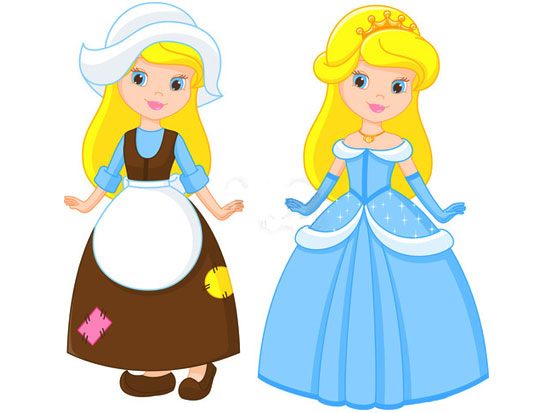

Once upon a time... there lived an unhappy young girl. Unhappy she was, for her mother was dead,
her father had married another woman, a widow with two daughters, and her stepmother didn't like her one little bit.
Unhappy CinderellaAll the nice things, kind thoughts and loving touches were for her own daughters.
And not just the kind thoughts and love, but also dresses, shoes, shawls, delicious food, comfy beds,
as well as every home comfort. All this was laid on for her daughters. But, for the poor unhappy girl,
there was nothing at all. No dresses, only her stepsisters' hand-me-downs. No lovely dishes, nothing but scraps.
No nice rests and comfort. For she had to work hard all day, and only when evening came was she allowed
to sit for a while by the fire, near the cinders. That is how she got her nickname, for everybody called her Cinderella.
Cinderella used to spend long hours all alone talking to the cat. The cat said,
"Miaow", which really meant, "Cheer up! You have something neither of your stepsisters have and that is beauty."
It was quite true. Cindaralla, even dressed in rags with a dusty gray face from the cinders, was a lovely girl. While her stepsisters, no matter how splendid and elegant their clothes, were still clumsy, lumpy and ugly and always would be. One day, beautiful new dresses arrived at the house. A ball was to be held at Court and the stepsisters were getting ready to go to it. Cinderella, didn't even dare ask, "What about me?" for she knew very well what the answer to that would be: "You? My dear girl, you're staying at home to wash the dishes, scrub the floors and turn down the beds for your stepsisters. They will come home tired and very sleepy." Cinderella sighed at the cat. "Oh dear, I'm so unhappy!" and the cat murmured "Miaow". Suddenly something amazing happened. In the kitchen, where Cinderella was sitting all by herself, there was a burst of light and a fairy appeared. "Don't be alarmed, Cinderella," said the fairy. "The wind blew me your sighs. I know you would love to go to the ball. And so you shall!" "How can I, dressed in rags?" Cinderella replied. "The servants will turn me away!" The fairy smiled. With a flick of her magic wand... Cinderella found herself wearing the most beautiful dress, the loveliest ever seen in the realm. "Now that we have settled the matter of the dress," said the fairy, "we'll need to get you a coach. A real lady would never go to a ball on foot!" "Quick! Get me a pumpkin!" she ordered. "Oh of course," said Cinderella, rushing away. Then the fairy turned to the cat. "You, bring me seven mice!"
"Seven mice!" said the cat. "I didn't know fairies ate mice too!" "They're not for eating, silly! Do as you are told!... and, remember they must be alive! Cinderella soon returned with a fine pumpkin and the cat with seven mice he had caught in the cellar.
Cinderella soon returned with a fine pumpkin and the cat with seven mice he had caught in the cellar
"Good!" exclaimed the fairy. With a flick of her magic wand... wonder of wonders! The pumpkin turned into a sparkling coach and the mice became six white horses, while the seventh mouse turned into a coachman, in a smart uniform and carrying a whip. Cinderella could hardly believe her eyes.
"I shall present you at Court. You will soon see that the Prince, in whose honor the ball is being held, will be enchanted by your loveliness. But remember! You must leave the ball at midnight and come home. For that is when the spell ends. Your coach will turn back into a pumpkin, the horses
will become mice again and the coachman will turn back into a mouse... and you will be dressed again in rags and wearing clogs instead of these dainty little slippers! Do you understand?" Cinderella smiled and said,
"Yes, I understand!"
When Cinderella entered the ballroom at the palace, a hush fell. Everyone stopped in mid-sentence to admire her elegance, her beauty and grace.
"Who can that be?" people asked each other. The two stepsisters also wondered who the newcomer was, for never in a month of Sundays, would they ever have guessed that the beautiful girl was really poor Cinderella who talked to the cat!
When the prince set eyes on Cinderella, he was struck by her beauty. Walking over to her, he bowed deeply and asked her to dance. And to the great disappointment of all the young ladies, he danced with Cinderella all evening.
"Who are you, fair maiden?" the Prince kept asking her. But Cinderella only replied:
"What does it matter who I am! You will never see me again anyway."
"Oh, but I shall, I'm quite certain!" he replied.

Cinderella had a wonderful time at the ball... But, all of a sudden, she heard the sound of a clock: the first stroke of midnight! She remembered what the fairy had said, and without a word of goodbye she slipped from the Prince's arms and ran down the steps. As she ran she lost one of her slippers, but not for a moment did she dream of stopping to pick it up! If the last stroke of midnight were to sound... oh... what a disaster that would be! Out she fled and vanished into the night.